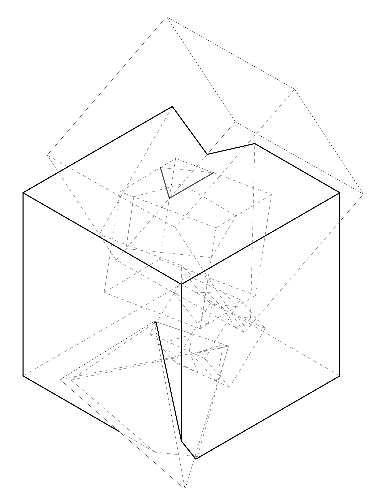
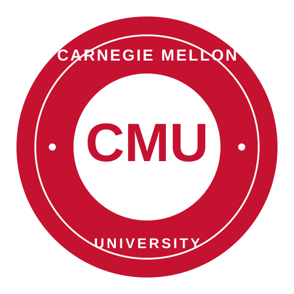
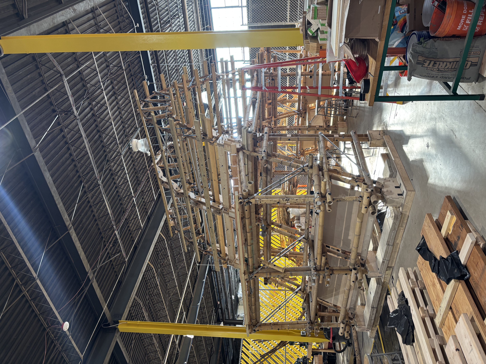
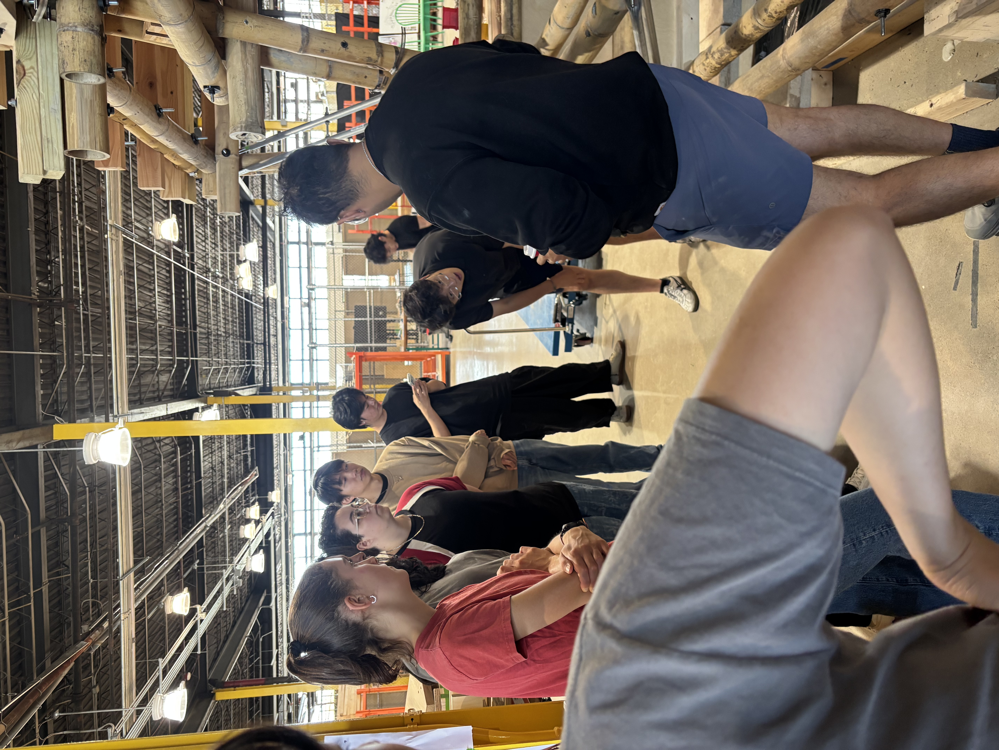

High school became the starting point for drawing, making, and asking why environments work the way they do. Curiosity moved from observation into a design habit.
DRAWINGMAKINGCURIOSITY
THE SHIFT
From liking how things look to questioning how they work.

02 / FIRST PRACTICE
INTERNSHIP / HONG KONG HUAYI
Testing AI inside a real design workflow.
Worked with the Director of Design to prototype a repeatable sketch-to-render process and evaluate where generative AI could support early architectural visualization.
10+MODELS600+ITERATIONS
GENERATIVE AIVISUALIZATIONEVALUATION
THE SHIFT
From experimenting alone to designing tools around a professional team’s needs.
600+
03 / COLLEGE
CARNEGIE MELLON UNIVERSITY
Architecture became a systems discipline.
Pursuing a Bachelor of Architecture with an additional major in Human-Computer Interaction—connecting spatial thinking, technical craft, research, and usability.
3.88GPA3×DEAN’S LIST
ARCHITECTUREHCIDIGITAL FABRICATION
THE SHIFT
From designing objects to understanding interconnected systems.

04 / RESEARCH
RESEARCH ASSISTANT / CMU SURA
Turning precedent research into structural proof.
Investigated Southeast Asian architectural precedents and traditional bamboo construction, then translated the research into drawings and physical joinery prototypes.
100LB5,000LB
RESEARCHJOINERYPROTOTYPING
THE SHIFT
From studying construction traditions to testing their performance at increasing scales.

05 / LEADERSHIP
TEACHING ASSISTANT / CMU
Coordinating many makers as one team.
Lead a 14-student project team across CNC routing, 3D printing, metal preparation, joinery fabrication, and assembly while supervising quality and safe tool operation.
14STUDENTS5TEAMS
LEADERSHIPFABRICATIONSAFETY
THE SHIFT
From making individual parts to coordinating shared standards across a full fabrication process.

06 / NOW
PROJECT DESIGNER / SANKOFA
Helping research become a place people can use.
Moving the Sankofa Bamboo Greenhouse toward full-scale construction through engineering tests, city permitting, community interviews, joinery design, and USDA grant work.
10+DETAILS$4KANNUAL
COMMUNITYSTRUCTURESDELIVERY
THE SHIFT
From proposing a design to carrying it through real constraints and relationships.
HOMEWOOD
07 / CURRENT POSITION
The timeline is still open.
Today, I work between disciplines: architecture gives me a way to think in systems, HCI keeps those systems human, and product thinking helps move them into reality.